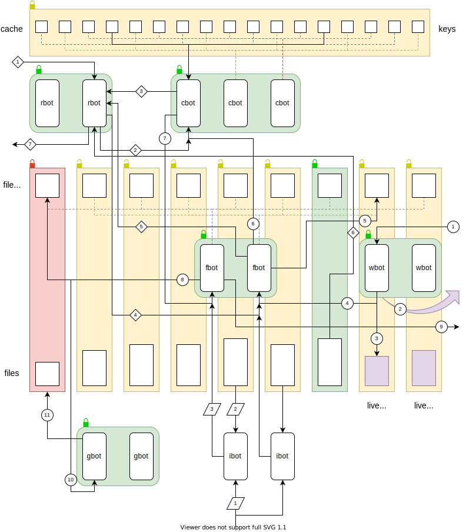

Ozone at a glance
Ozone works by appending key-value pairs to operating system files, and efficiently using available resources by deleting old file values and retaining as much value data in memory as possible. It was inspired by Bitcask. Files are limited in size and accumulate over time. Ozone maintains two main data structures:
- Every file is associated with a file state which includes a map of the position of data.
- A data cache maps keys to the most current file location, and possibly to an in-memory copy of the value.
Ozone assigns data randomly (using keys) across one or more independent zones. In each it executes a collection of thread pools dedicated to performing specific operations:
- Writer bots (wbots) append key-value data to live files.
- File bots (fbots) manage the file states and are assigned to specific files in order to provide queues that enforce consistent ordering of file operations.
- Cache bots (cbots) manage cache access and are assigned to specific keys in order to provide queues that enforce consistent ordering of cache operations.
- Garbage bots (gbots) that perform garbage collection on files as requested by fbots.
- Reader bots (rbots) that coordinate the retrieval of values.
- Initialisation bots (ibots) that read data from files and fill the file states and cache during start up.
Design
The idea is that adjusting the number of bots of each kind manually or automatically, performance can be tuned for the workload. The strategy is lock-full, accepting the cost of a system with many smaller threads and lockable parts in the hope of achieving an overall performance benefit from smaller queues.
In the accompanying diagram, the cache consists of keys associated with a file location and possibly a value, and file states are associated with files. Major lockable components are show in red (locked for writing), green (locked for reading) and yellow (unlocked). We might prefer to combine the roles of cbots and fbots, neither of which interact directly with files. However, while wbots and ibots know the file they wish to modify, rbots do not (they only know the key), and splitting cbots and fbots shortens potential wait times for rbots.

Writing
- A randomly chosen wbot is asked to store a key-value pair.
- If the live file size will exceed the configured limit, the wbot starts a new live file in the sequence.
- The wbot appends the data to its live file.
- The wbot sends the file location and value to the fbot assigned to the live file.
- The fbot updates the file state with the new data, including mapping its start position and adjusting the file and directory size.
- The fbot sends the file location and value to the cbot assigned to the key.
- The cbot performs the insertion of the new file location and value, and if there was an existing value, sends the old file location to the fbot assigned to its file.
- The fbot schedules the old data for deletion and checks to see if garbage collection is necessary.
- The fbot responds to the original storage request, indicating that the operation was successful and whether the key was already present.
Garbage collection
- If required, the fbot requests a randomly chosen gbot to perform garbage collection on the file.
- The gbot locks the file for writing while performing the transcription to remove old file data, and updating the file state.
Over time, garbage collection can lead to complete file deletion.
Reading
- A randomly chosen rbot is asked to retrieve the value for a specified key.
- The rbot sends a request to the cbot assigned to the key for the value or file location.
- The cbot responds either with the value, which the rbot can immediately return, bypassing the next three steps, or with the file location.
- The rbot sends a request to the fbot assigned to the file.
- The fbot responds to the rbot, providing permission to read the file.
- The rbot locks the file for reading (green), and reads the data.
- The rbot returns the value to the caller.
Initialisation
- A randomly chosen ibot is asked to cache the keys and file locations from an index file, or else directly cache the keys and values from the data file whilst re-creating an index file. The files are cached in numerical order.
- The gbot reads the index file, or if there is a problem or no such file exists, it reads the data file and creates an index file. Unlike wbots, ibots buffer file writing.
- The ibot uses the same insertion pipeline starting with step 4 of the writing process, that is, sending data to the file's fbot.